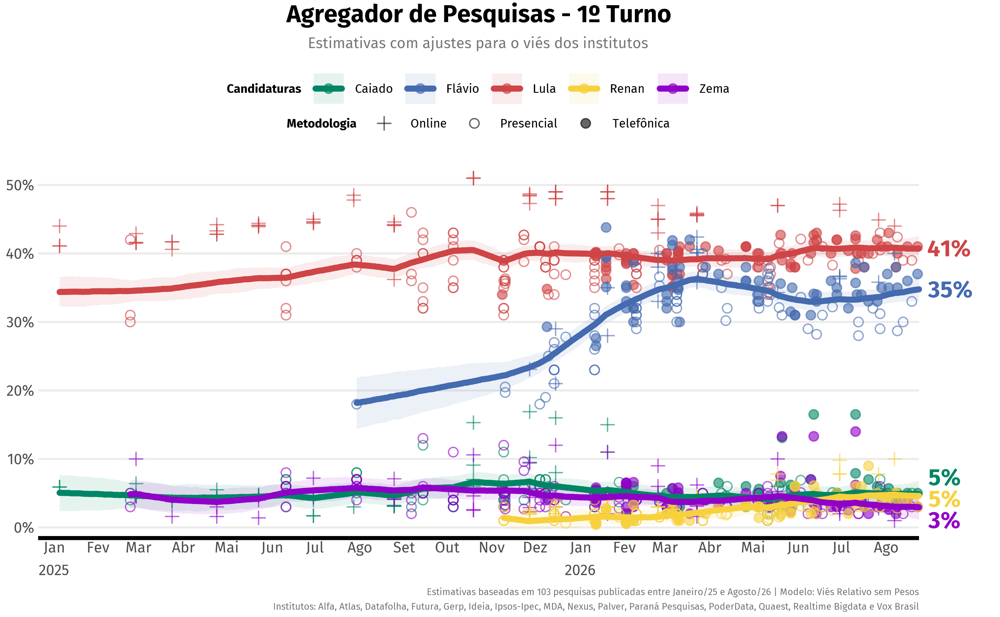
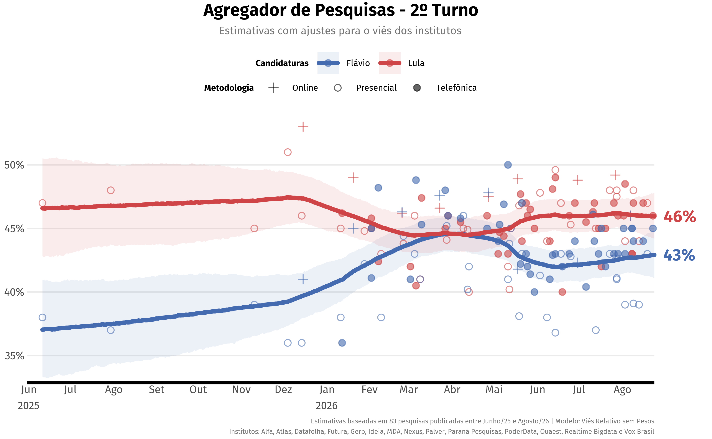
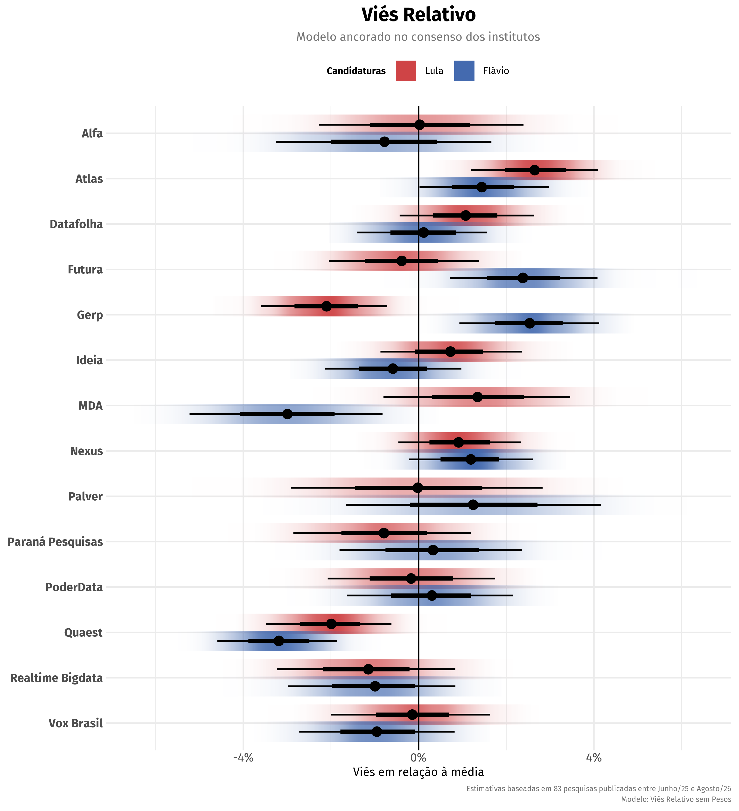
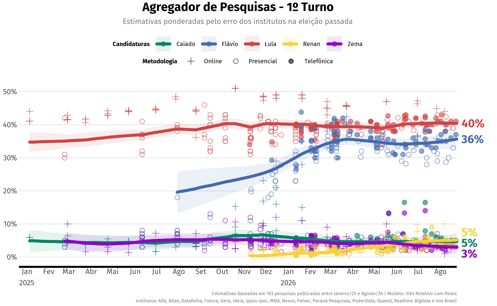
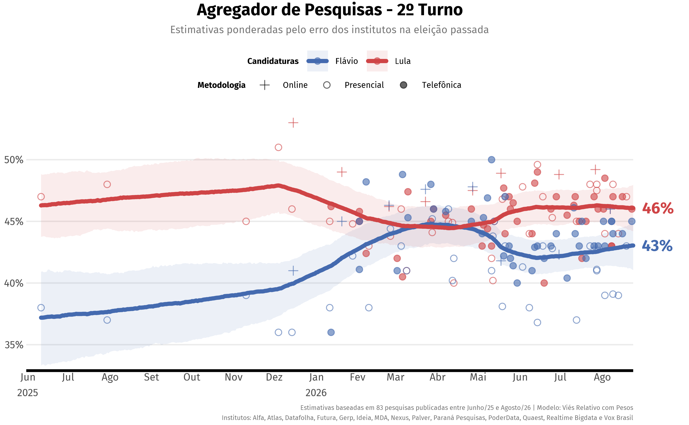
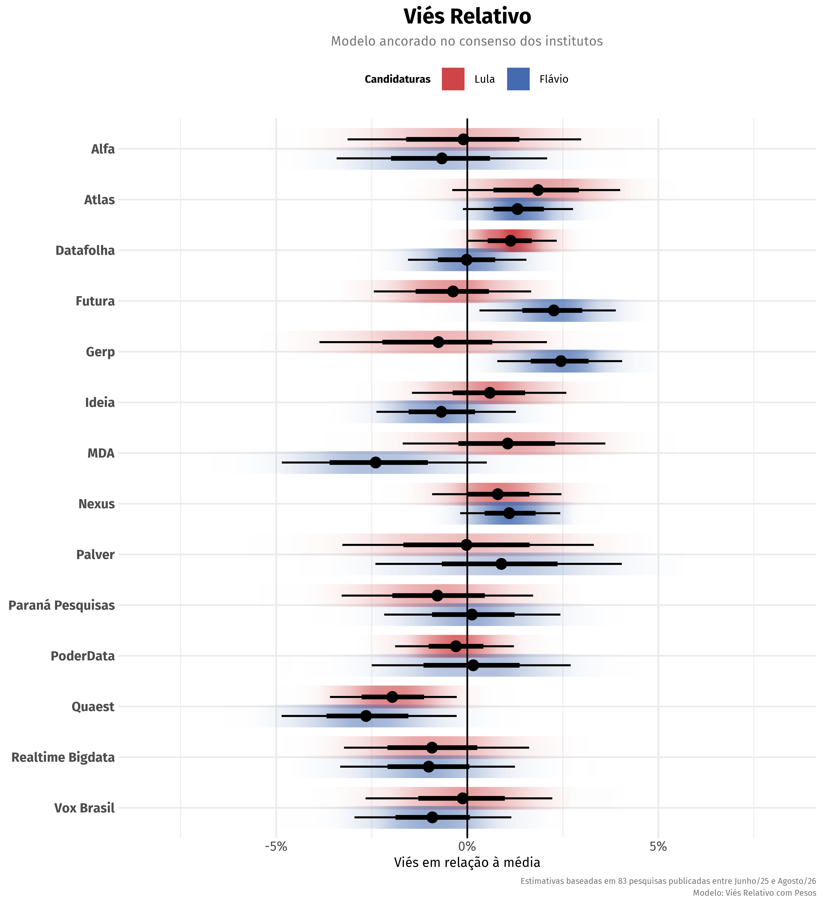
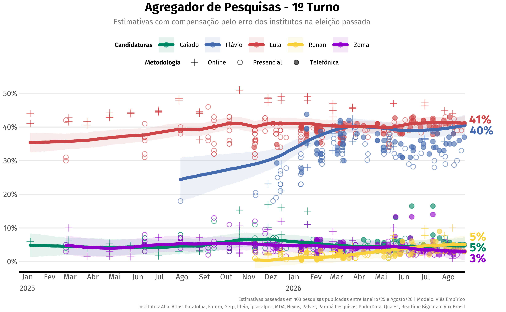
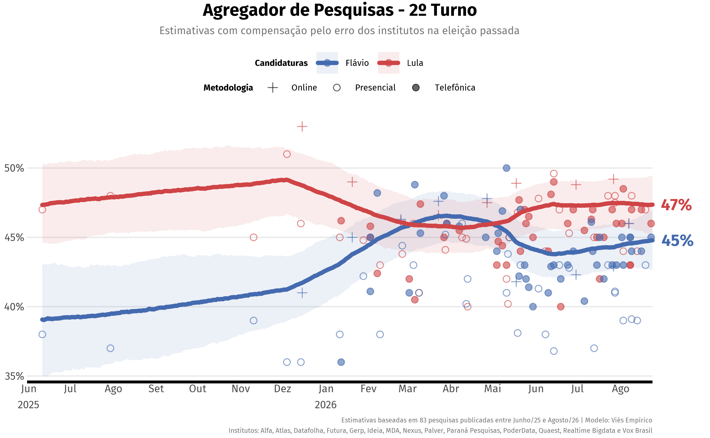
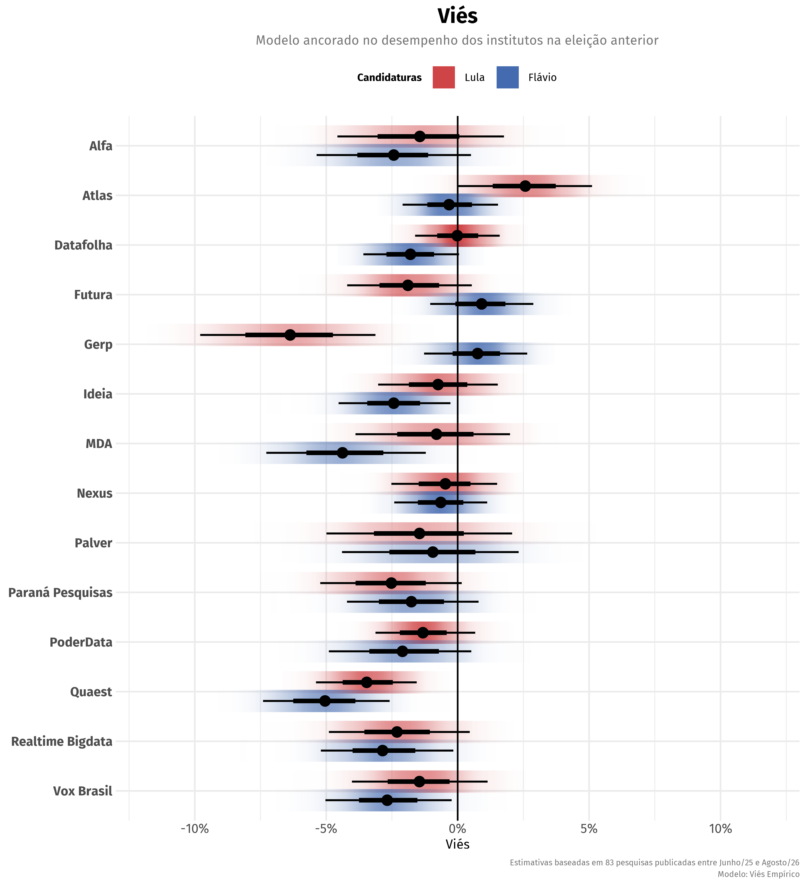

Última atualização: 24/08/2026
Introdução
Como interpretar tantas pesquisas eleitorais com resultados
divergentes? O agregR emprega um conjunto de modelos
estatísticos para filtrar a enxurrada de dados divulgados no período
eleitoral e estimar o nível subjacente de apoio para cada candidato.
São 31 modelos que se diferenciam pela importância que cada um atribui ao desempenho dos institutos na última eleição. Eles são apresentados abaixo em ordem do menos dependente dos dados históricos para o mais dependente. Cada modelo contém uma breve nota introdutória, e interessados em mais detalhes podem consultar a metodologia completa.
Os modelos contemplam:
- Desempenho dos institutos na última eleição
- Vieses de acordo com o alinhamento político dos candidatos
- Vieses dos institutos em relação ao consenso
- Margens de erro incoerentes com o tamanho da amostra
- Erros não-amostrais (para além da margem de erro)
Esta página apresenta os cenários eleitorais mais prováveis, mas
agregR é um pacote para o R que pode ser instalado
gratuitamente. Fique à vontade para explorar os mais de 10 cenários
disponíveis no banco de dados.
Modelo 1: Viés Relativo sem Pesos
Este modelo não usa qualquer informação sobre o desempenho dos institutos na última eleição, calculando vieses puramente com base nas pesquisas deste ciclo eleitoral. Todos os institutos têm o mesmo peso.

{kind=link}

{kind=link}

{kind=link}
Modelo 2: Viés Relativo com Pesos
Este modelo equilibra o uso de dados históricos e do ciclo atual. Atribui pesos aos institutos de acordo com o desempenho na última eleição, considerando o alinhamento político dos candidatos. O viés é estimado em torno do consenso das pesquisas.

{kind=link}

{kind=link}

{kind=link}
Modelo 3: Viés Empírico
Este é o modelo mais vinculado ao passado. Além de atribuir pesos aos institutos de acordo com o desempenho na última eleição, também compensa (ou desconta) os candidatos com alinhamentos políticos mais prejudicados (ou beneficiados) por cada instituto.

{kind=link}

{kind=link}

{kind=link}
Pesquisas incluídas
O banco de dados se baseia nas pesquisas registradas no TSE e divulgadas na imprensa. Ele contém 128 pesquisas para a eleição de 2026, abrangendo os seguintes institutos:
- Alfa
- Atlas
- Datafolha
- Futura
- Gerp
- Ideia
- Ipsos-Ipec
- MDA
- Nexus
- Palver
- Paraná Pesquisas
- PoderData
- Quaest
- Realtime Bigdata
- Vox Brasil
Última pesquisa: Nexus com campo entre 21/08/2026 e 23/08/2026
Agradecimentos a Ricardo Ribeiro, que gentilmente compartilhou sua planilha de pesquisas para o ciclo atual, e ao Poder360, que publicou sua base histórica de pesquisas.